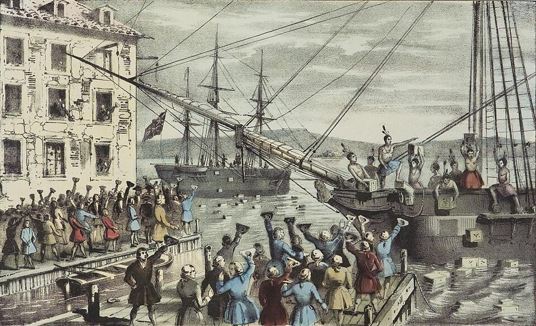
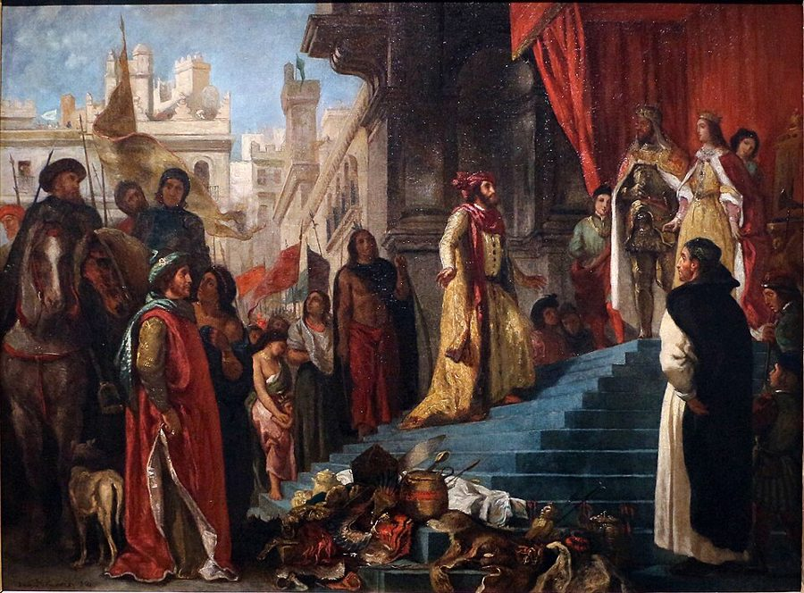

这一页在做什么
全书最长的一章，写于 1775 到 1776 年：北美的仗刚打起来，斯密一边写，一边看着大英帝国裂开。他问三件事：欧洲人当初为什么去美洲；殖民地为什么长得那么快；母国把殖民地的生意攥在手里，到底赚了还是赔了。最后他又转向东印度，看一家商人公司怎样当上了孟加拉的统治者。读的时候抓两条线：贸易和垄断要分开算账；替谁打的算盘。

他想证明什么
这一章三万六千多词，要证明的其实是一句话：殖民地的贸易是好东西，母国对这门贸易的垄断是坏东西，英国从中得利，是尽管有垄断，不是因为有垄断。第一部分讲动机：哥伦布找的是印度，西班牙人找的是金子，全凭一个误会和一场黄金梦。第二部分讲繁荣：好地多，又能自己管自己，新殖民地比哪种社会长得都快，欧洲政府的功劳几乎只有一样：养出了那些人。第三部分是全章的重心，斯密算了一本账：垄断给英国换来的只是压低别国的「相对」好处，代价是资本被挤进又远又慢的生意，养殖民地的军费全由英国人掏。账算完，他给出两个方案：要么好聚好散，要么让北美按纳税多少选议员进伦敦。最后转到东印度，看专营公司怎样治国。
读法：§6、§8 先读，加起来五千多字，「小店主的国家」和「人类史上最大的两件事」都在这里。§1 哥伦布和黄金国、§7 大陆会议、§9 东印度公司有空就读，故事最多。§4、§5 是算账，可以只看 §5 第 129–130 段的「血管」比喻。§2 各国殖民地的细账可以跳过。
第 121–132 段的账，靠的是「资本周转越快、养活的本国劳动越多」，页 13 已经说过今天不这么算。第 102 段的「相对优势」也不是李嘉图的比较优势。
斯密落在哪：为养出一国顾客去建帝国，是受小店主左右的政府才想得出的主意；照眼下的管法，英国从统治殖民地只得到亏损。他说最好的办法是自愿放手、订约通商，可他也说没有哪个国家会这么做。
分节地图
这一页是卷四第 7 章，本站切成 9 节。粗体是本站起的节名；「杨译里找」后面是杨译里这一节开头附近的小标题或第一句；灰色的英文是原文这一节开头的几个词。标「先读」的是最短读法。
- 哥伦布要找的是印度第一部分 论建立新殖民地的动机THE interest which occasioned the first settlement …希腊、罗马为什么建殖民地，欧洲人为什么去美洲。第 8–14 段哥伦布的误会、第 18–19 段「最不利的彩票」和黄金国，是全章最好看的故事。
- 各国殖民地和列举商品西班牙殖民地墨西哥和秘鲁，进步非常大The crown of Spain, by its share …西、葡、瑞、丹、荷、法各国殖民地挨个点名，再列英国殖民地的四条好处和哪些货只许卖给英国。细节多，可跳过；第 42 段「六万多镑治理三百万人」值得一看。
- 愚蠢和不义造就的殖民地不列颠美洲殖民地与不列颠西印度之间贸易十分自由The most perfect freedom of trade is …英国不许殖民地炼钢、精制糖，第 66 段说这是对人类最神圣权利的侵犯；第 76–77 段谈奴隶，第 81–86 段说欧洲政府对殖民地几乎毫无功劳。
- 垄断只换来相对优势第三部分 论欧洲从美洲的发现以及从通过好望角去到东印度的通道的发现所获得的利益SUCH are the advantages which the colonies …全欧洲从美洲得了什么，母国又单独得了什么。第 102–104 段的「相对」和「绝对」好处，是这一章算账的起点。
- 一根撑大的血管殖民地贸易被认为比其他贸易更为有利The colony trade, however, it may perhaps …周转慢的账今天已不这么算，可以快读。第 129–130 段的血管比喻和「慢慢放开」，第 147 段加的斯、里斯本和阿姆斯特丹的商人，值得细看。
- 小店主的国家垄断政策是小店主的政策To found a great empire for the …全书名段：为养出一国顾客去建帝国。接着算英国为殖民地花的军费，最后是自愿放手的建议。四段，一口气读完。
- 让北美选议员进伦敦为了使任何一个省份对于它所属的帝国…In order to render any province …另一个方案：按纳税多少让北美选议员进议会。第 161 段说大陆会议里的人从小店主、律师变成了政治家，第 165 段预言帝国的中心会移到美洲。
- 人类史上最大的两件事美洲的发现，经由好望角去到东印度…The discovery of America, and that of …第 166 段是全章的名段，也是斯密少有的直接为土著说话。后面几段说母国只独占了殖民地的开支，好处却得分给别国。
- 专营公司是个祸害重商主义体系打乱了这种分配，特别是在美洲和东印度贸易方面All the different regulations of the mercantile …东印度的专营公司。第 187 段烧香料、犁罂粟，第 192 段「人人都想尽快离开的政府」，第 193 段斯密说他骂的是制度，不是人。
先用中文过一遍：这一页的概念
这一页用到的三个概念。讲的是概念本身；每块的「今天」说今天怎么看它。资本周转和贸易的座次见页 13 的资本的四种用途、贩运贸易。
§4殖民地贸易垄断 the exclusive trade of the colonies
母国用法律规定：殖民地要的欧洲货，只能从母国买；殖民地出产的某些货，只能卖给母国。英国从 1660 年的航海法起，把糖、烟草、棉花、靛青等货列进一张名单，叫「列举商品」，只许运往英国，译本：「列举商品」；名单外的谷物、木材、鱼可以卖到别处，但要用英国或殖民地的船。打个比方：一家店替顾客买了房子，条件是他以后只在这家店买东西，卖东西也只卖给这家店。斯密说，这种独占是殖民地带给母国的唯一特殊好处，译本：「专营贸易」。
今天：今天叫贸易保护或贸易转移：被法律圈起来的市场里，卖方赚得多、买方付得多，整体做的生意比放开时少。经济史学者估算过，英国这套规定压在北美殖民者身上的净负担不大。
在这一页：第 47 段讲名单，第 100–101 段说它是唯一的好处，第 105–148 段算它的代价，第 149 段说它是谁的主意。
§4相对优势和绝对优势 a relative than an absolute advantage
两个人赛跑，你可以靠自己跑快一点赢，也可以靠绊对手一脚赢。斯密说，殖民地垄断给英国的是后一种：别国只能从英国转手买烟草，付得比英国人贵，英国人就显得比别国强，这是「相对」的好处；可要是贸易放开，烟草多种多卖，连英国人自己多半也能买得更便宜，那是「绝对」的好处。斯密说，很有理由相信英国为了前者牺牲了一部分后者，译本：「相对利益」。它和页 17 裁缝和鞋匠的绝对优势不是一回事，和李嘉图 1817 年的比较优势更不是：那两个讲各自干拿手的行当、双方都得利，这里讲的是靠压低别人显得强。
今天：和它最接近的说法是「以邻为壑」：一国的政策靠损害别国来改善自己的相对处境，整个世界的蛋糕变小。今天的经济学看一国的得失，主要看自己的绝对收入，不看比别国强多少。
在这一页：第 101–104 段立论，第 112–119 段说垄断反而让英国在别的生意上吃了「绝对」和「相对」两重亏。
§9专营公司 exclusive companies
国家特许一家公司独占某一片海外贸易，别的本国商人不许插手，英国东印度公司、荷兰东印度公司都是。斯密分出两种垄断：美洲那种是一国对别国关门；专营公司那种是对本国人自己关门，本国人买东方货，要替公司的超额利润和管理上的浪费买单，所以他说后一种更荒唐。东印度公司还在印度打仗、收税、审案，商人当上了统治者。今天说的「公司」是什么、斯密怎么看股份公司，见页 24 的股份公司。
今天：今天叫特许垄断。斯密对它的分析，今天的说法是「委托—代理问题」：远在万里之外的雇员，利益和东家不一致，东家又看不住。
在这一页：第 177 段对本国人关门，第 181–185 段穷国和富国，第 188–192 段商人当统治者，第 194 段的判语。
故事和背景
这一页里的故事和 18 世纪的东西，按在书里出现的顺序排。
§1哥伦布找到的是一个误会

斯密笔下的哥伦布不是英雄，是个不肯认错的人。他往西航行，想去马可·波罗写过的印度和中国，找到的却是满是树林的岛。他不信：圣多明各岛上有座山叫 Cibao，他就当它是马可·波罗说的日本 Cipango。他写信给国王和王后，管这些地方叫印度，「西印度」这个名字就是这么来的。岛上最大的走兽「介于老鼠和兔子之间」，拿不出手，他只好拿土著身上的小块金饰说事。回国游行时，值钱的只有几件金饰和几包棉花，其余是大芦苇、鸟羽、鳄鱼和海牛标本，打头的是六七个「可怜的土著」。斯密说，后来的西班牙人似乎都被「神圣的黄金渴望」驱使。他接着说，找金银矿也许是世上最不利的彩票，一张票的价钱是一个富翁的全部家当；连 Walter Raleigh 也做过黄金国的梦。在杨译里找「哥伦布误以为他所发现的那些国家是东印度各国」。人为什么总高估自己的运气，见页 07 的过度自信。
§2六万多镑，管三百万人
第 42 段是一张小账单：马萨诸塞湾一年的民政开支约一万八千镑，罗得岛三千五百镑，新泽西一千二百镑；北美各殖民地除马里兰和北卡罗来纳查不到准数，加起来一年不过六万四千七百镑。斯密说，这是三百万人以多么小的代价不但被统治、而且被统治得很好的「永远值得纪念的例子」。秘诀是没人在殖民地摆排场：新总督到任不铺张，没有什一税，教士靠薪水和捐献。对面是秘鲁，迎接一位新总督的花费常常大得惊人。可这笔账有一半没算：防务全由英国出钱。七年战争之后英国想让北美分担军费，1765 年征印花税，引来「无代表不纳税」的抗议，第二年就撤了，斯密在第 129 段提到这次撤销在商人中很受欢迎。在杨译里找「（3）税收比较适中」。
§7从小店主、律师变成政治家
第 131 段写着，北美十二个殖民地停止进口英国货「已经一年多」，从 1774 年 12 月 1 日算起，可见这一部分写于 1775 年底或 1776 年初；《国富论》3 月出版，四个月后才有《独立宣言》，仗怎么收场谁也不知道。第 161 段斯密看着费城的大陆会议，说那些人「从小店主、商人和律师变成了政治家和立法者」，正为一个广大的帝国设计新政府，他们自以为它会成为世上最伟大、最可怕的国家之一，斯密补了一句：看来也很有可能。他说以为单靠武力就能征服殖民地的人是糊涂的，真要打，流的每一滴血，不是同胞的，就是我们盼着成为同胞的人的。1778 年，萨拉托加战败后，斯密给当副检察长的老学生 Wedderburn 写了一份备忘录，把仗的结局分成四种，仍然最看好联合，却承认在英国几乎没人赞成。在杨译里找「应当提议按课税比例来选派国会代表」。
§9烧香料，犁罂粟
第 187 段，斯密说（他用的是「据说」）荷兰东印度公司在香料群岛把丰年多出来的香料烧掉，在没设据点的岛上悬赏，让人去摘丁香和肉豆蔻的嫩芽，野树几乎被拔光，摩鹿加群岛几个岛的人口被压到只够给驻军和来船供应吃喝。历史上荷兰人确实下过狠手：1621 年 Coen 率兵征服班达群岛，岛上约一万五千居民几乎全被杀、被逐或被卖为奴，荷兰公司从此独占了肉豆蔻。英国公司在孟加拉还没来得及做到这一步，斯密说「我确知」：商馆的头目会命令农民把一片好罂粟田犁了改种稻，说是防饥荒，其实是手上囤着鸦片，好卖高价；有时又反过来，把稻田犁了种罂粟。孟加拉 1770 年的大饥荒见页 05。在杨译里找「荷兰的专营公司摧毁了香料和豆蔻树」。
原典：斯密的原话
这本书是公版书，下面整段放斯密的原文，配本站的白话译。灰字说它在杨译的哪里，最后一行是这段里今天容易读错的 18 世纪词。
§6小店主的国家
全书名段，「小店主的国家」这个说法常被安到拿破仑头上。在杨译垄断政策是小店主的政策那个小标题下面，那一段的前半。
To found a great empire for the sole purpose of raising up a people of customers, may at first sight appear a project fit only for a nation of shopkeepers. It is, however, a project altogether unfit for a nation of shopkeepers; but extremely fit for a nation whose government is influenced by shopkeepers. Such statesmen, and such statesmen only, are capable of fancying that they will find some advantage in employing the blood and treasure of their fellow-citizens, to found and maintain such an empire. Say to a shopkeeper, Buy me a good estate, and I shall always buy my clothes at your shop, even though I should pay somewhat dearer than what I can have them for at other shops; and you will not find him very forward to embrace your proposal. But should any other person buy you such an estate, the shopkeeper would be much obliged to your benefactor if he would enjoin you to buy all your clothes at his shop.
本站译：只为养出一国的顾客，就去建立一个大帝国，乍一看，像是只有小店主的国家才想得出的主意。其实，这种主意完全不适合小店主的国家，倒是极适合一个政府受小店主左右的国家。只有这样的政治家，也只有他们，才会以为拿同胞的血和钱去建立、维持这样一个帝国，能捞到什么好处。你去跟一个店主说：替我买一处好田产，往后我的衣服都在你店里买，哪怕比别家贵一点。你会发现，他对这桩买卖并不起劲。可要是别人替你买了这处田产，再吩咐你所有的衣服都得在他店里买，店主会对这位恩人感激不尽。
斯密骂的不是店主，是被店主牵着走的政府。Cannan 注明，初版这里写的是「被店主统治的国家」，后来才改成「受店主左右」。这个说法也不是斯密头一个说的：Josiah Tucker 1766 年已有相近的话；拿破仑说它，是在斯密之后。
- estate田产、庄园，一大片能收租的地
- treasure钱财、国库，不是「宝藏」
- forward热心、急着要做，不是「向前」
§6好聚好散
1776 年就主张母国自愿放弃殖民地，在当时近乎天方夜谭，斯密自己也这么说。杨译里这个小标题排到了这一段后面：找紧挨在自愿分离是非常有利的前面的那一段。
To propose that Great Britain should voluntarily give up all authority over her colonies, and leave them to elect their own magistrates, to enact their own laws, and to make peace and war as they might think proper, would be to propose such a measure as never was, and never will be adopted, by any nation in the world. … If it was adopted, however, Great Britain would not only be immediately freed from the whole annual expence of the peace establishment of the colonies, but might settle with them such a treaty of commerce as would effectually secure to her a free trade, more advantageous to the great body of the people, though less so to the merchants, than the monopoly which she at present enjoys. By thus parting good friends, the natural affection of the colonies to the mother country, which, perhaps, our late dissensions have well nigh extinguished, would quickly revive. It might dispose them not only to respect, for whole centuries together, that treaty of commerce which they had concluded with us at parting, but to favour us in war as well as in trade, and, instead of turbulent and factious subjects, to become our most faithful, affectionate, and generous allies
本站译：提议大不列颠自愿交出对殖民地的一切权力，让它们自己选官、自己立法、自己决定和谁开战、和谁讲和，等于提出一项世上从没有哪个国家采纳过、将来也不会采纳的办法。……可万一真采纳了，大不列颠不但立刻甩掉殖民地平时驻防的全部年度开销，还可以和它们订一个通商条约，牢牢保住自由贸易。比起眼下独占的买卖，这对全体人民更划算，只是对商人没那么划算。像这样好聚好散，殖民地对母国天生的情分，近来的争吵也许已经把它磨得差不多了，很快会回来。这份情分可能不但会让它们在好几个世纪里守住分手时订下的通商条约，还会让它们打仗时也像做买卖时一样帮着我们；它们不再是爱闹事、爱结党的臣民，而会成为我们最忠诚、最亲热、最慷慨的盟友。
略去的几句说为什么没人会采纳：放弃一个省总伤一国的面子，更断了统治集团的官位和财路，「最爱空想的狂热分子」也不会真指望它被采纳。他是借一个明知不现实的方案说理。七年后美国独立，英国是打输了才放手的。
- peace establishment平时的常备驻防：和平时期养着的军队和舰队
- dissensions争吵、不和，这里指北美的抗税和开战
- factious结党闹事的，不是「事实的」
§8人类史上最大的两件事
全章的名段，也是斯密少有的直接为土著说话。在杨译美洲人不会受到压迫那个小标题后面的一段，开头就是这句话。
The discovery of America, and that of a passage to the East Indies by the Cape of Good Hope, are the two greatest and most important events recorded in the history of mankind. … By uniting, in some measure, the most distant parts of the world, by enabling them to relieve one another’s wants, to increase one another’s enjoyments, and to encourage one another’s industry, their general tendency would seem to be beneficial. To the natives, however, both of the East and West Indies, all the commercial benefits which can have resulted from those events have been sunk and lost in the dreadful misfortunes which they have occasioned. These misfortunes, however, seem to have arisen rather from accident than from any thing in the nature of those events themselves. At the particular time when these discoveries were made, the superiority of force happened to be so great on the side of the Europeans, that they were enabled to commit with impunity every sort of injustice in those remote countries. Hereafter, perhaps, the natives of those countries may grow stronger, or those of Europe may grow weaker, and the inhabitants of all the different quarters of the world may arrive at that equality of courage and force …
本站译：发现美洲，发现绕过好望角去东印度的航路，是人类有史以来记下的两件头等大事。……它们在某种程度上把世界上相隔最远的地方连在了一起，让各地能互通有无、互添享受、互相带动生产，大体说来，它们的作用看来是好的。可是对东印度和西印度的土著来说，这两件事可能带来的种种商业好处，都被它们引来的可怕灾难吞没了。不过，这些灾难似乎与其说出自这两件事本身，不如说出自偶然。发现的那个时候，碰巧欧洲人的力量强得太多，能在那些遥远的地方为所欲为、干尽不义之事而不受惩罚。将来，也许那些地方的人会强起来，或者欧洲人会弱下去，世界各地的人也许会在勇气和力量上旗鼓相当……
开头略去的一句说，才过了两三百年，后果还远没看全；末尾略去的半句说，只有力量相当带来的彼此畏惧，才能逼各国多少尊重彼此的权利。Cannan 注明，「最重要的事件」这个说法来自 Raynal 那本东西印度史的开篇。这段最后一句，斯密说最能带来这种平衡的，是各国之间广泛通商带来的知识和改良的交流。
- industry勤劳、生产活动，不是「工业」
- natives当地原有的居民、土著
- overawe震慑、镇住
译本勘误
杨译这一章整体可靠。下面只收会把人读歪的几处。灰字是英文原文那一处的几个词；方框里是杨译的原句，在电子书里搜它。
§2police 是行政，不是警察术语
… some other officers of police …
译本：「法官以及一些其他警察官员」
18 世纪的 police 指公共行政、地方治理。斯密说殖民地的民政开支只用来付总督、法官和其他行政官员的薪水，再修几项最有用的公共工程。读成「警察」，像是殖民地另养了一支警察。
§3法国糖岛能炼糖，英国的不能译反
… are not discouraged, like those of England …
译本：「就像英格兰的食糖殖民地一样」
原文是：法国的糖殖民地不像英国的那样被压着不许炼糖。杨译读起来像两边都没被阻止，正好把对比说反了。第 63 段刚说过，英国对精制糖课重税，等于禁止英国糖岛炼糖。
§7「看来很有可能」这句预言漏了漏译
which, indeed, seems very likely to become
译本：「他们自以为这个帝国将成为这样的帝国」
原文说，大陆会议的人自以为他们设计的帝国会成为世上最伟大、最可怕的国家之一，斯密接着说「看来确实很有可能」。杨译漏了「最伟大、最可怕」和斯密自己的这半句，1776 年最有名的一句预言就不见了。
§9是摩鹿加群岛，不是马六甲误译
the population of several of the Moluccas
译本：「已经减少了马六甲居民的数目」
这是杨译这一段前面的小标题。Moluccas 是今天印度尼西亚东部的摩鹿加群岛（马鲁古群岛），出丁香和肉豆蔻的香料群岛；马六甲在马来半岛，是另一个地方。正文译作「摩鹿加群岛」，是对的。
§9公司的参事会，不是市议会术语
the councils of Madras and Calcutta
译本：「马德拉斯和加尔各答的市议会」
这里的 council 是东印度公司在马德拉斯和加尔各答设的管理参事会，由总督和几名高级职员组成，管打仗、谈判和收税。斯密夸的是这些商人出身的公司职员，不是两座城市的市政机构。
今天怎么看
这一章的主要说法和今天的判断。每条标签判的是那条论点，五种标签的意思：
- 成立今天的经济学和证据支持这句话。
- 部分成立大方向对，细节或适用范围要改。
- 过时说的是 18 世纪的世界，当时也许对，今天的制度和技术已经变了。
- 被推翻后来的经济学或证据说明它错了。
- 有争议经济学界至今没有定论，两边各有代表性的研究。
殖民地贸易本身有益，垄断有害；英国得利是尽管有垄断
新市场带来新产出；把别国挡在外面，抬高价格、压低产出，是坏处，好处大过坏处（第 133–136、141 段）。今天看，这条成立：贸易得益、限制有代价是教科书结论；经济史学者 Thomas 1965 年估算，扣掉英国海军保护的好处，航海法压在北美殖民者身上的净负担很小，他后来说接近一笔对等的交易。斯密第 153 段说垄断是殖民地「很重的税」，这句说重了；第 66 段说禁令迄今伤害不大，倒对得上。
§5 第 133–141 段同样的资本，周转越慢，养活的本国劳动越少，所以垄断让英国吃亏
斯密说，跟美洲做生意三五年才回一次本，同样一千镑只抵得上两百镑在国内干一年的活（第 124 段）。今天看，这套算法过时了，理由见页 13：一国的得失看资本赚回多少、换来的东西值多少，不看推动了多少本国人干活。商人自己觉得划算的远程生意，不会因为回本慢就让国家变穷。
§5 第 121–128 段把工商业押在一个大市场上更脆弱，放开要慢慢来
人为撑大的那根「血管」一堵，全身就抽搐；可骤然全开，靠它吃饭的人会受长久的损失，所以他说「似乎」只有适度、逐步地放松才是出路，先放哪条、后放哪条留给将来的政治家（第 129–130 段）。今天看，这条成立：Autor、Dorn、Hanson 2013 年的「中国冲击」研究发现，进口竞争来得又猛又集中时，受冲击地方的失业和收入损失很重。斯密主张渐进改革，这一点常被忽略。
§5 第 129–131 段商人公司当了统治者，商人的利益和统治者的利益正好相反
统治者的收入来自百姓的收入，该让市场越大越好；商人却要贱买贵卖、挡住对手。远在印度的职员还各做私贸易，比公司的垄断更坏（第 188–192 段）。今天看，这条成立：英国议会 1773 年起一步步收权，1813 年取消公司对印度贸易的独占，1858 年把统治权收归王室；斯密说的就是今天的委托—代理问题。
§9 第 188–194 段书里的说法：照眼下的管法，英国从统治殖民地只得到亏损
- 书里
- 第 151 段。理由在第 98–99、150 段：北美从没为保卫母国出过兵，交的税也不够数，平时要养二十个步兵团和一支海军，七年战争九千多万镑也该记在殖民地账上。他算的是国家的账，也说垄断让少数商人得利。
- 当时
- 北美殖民者人均收入已经不低（见页 05），税却轻得多，英国想加税就引出了印花税风波和独立战争。
- 今天
- 对斯密那个时代，「殖民地没给英国国库出多少钱」这一半没人争。对整个帝国划不划算，研究多半做的是 19 世纪后半的帝国，结论分两边：Davis 和 Huttenback 1986 年的《财神与帝国》认为，帝国对英国整体是净亏，纳税的中产阶级出了防务的钱，利润落到少数投资者手里；O'Brien 1988 年也认为帝国推高了英国的军费和税负。另一边，Offer 1993 年质疑他们从公司账目推算回报的办法，认为英国的防务开支和法、德比并不离谱，帝国内部防务负担不均也说得通，帝国未必是一笔浪费。核对于 2026-10。依据：Davis & Huttenback, Mammon and the Pursuit of Empire, Cambridge, 1986；O'Brien, Past & Present, 1988；Offer, Economic History Review, 1993。
书里的说法：新殖民地繁荣的两大原因，是好地多，和自己管自己的自由
- 书里
- 第 38 段，斯密用了 seem。第 23 段说的是占了荒地或人烟稀少、土著「容易让出地方」的殖民地；第 24–25 段说地多工资高，人口长得快。
- 当时
- 北美人口二十到二十五年翻一番，工资比英国高（页 05 的高工资经济）。
- 今天
- 「自由」这一半，今天的制度派支持：Acemoglu、Johnson、Robinson 2001 年认为，欧洲人能长住的地方建起了保护产权的制度，今天就富，欧洲人病死多的地方只建了掠夺性的制度。Albouy 2012 年质疑他们用的殖民者死亡率数据，两边至今在争。「好地多」这一半要加限定：Engerman 和 Sokoloff 指出，适合种糖的好地带来了奴隶种植园和极端不平等，长期反而拖后腿。「人烟稀少」也不全是天生的：Koch 等人 2019 年估计，1492 年后的一百年里美洲原住民死了约九成，多数死于欧洲人带去的疫病。核对于 2026-10。依据：Acemoglu, Johnson & Robinson, American Economic Review, 2001；Albouy 及作者回应，American Economic Review, 2012；Engerman & Sokoloff, NBER, 1994；Koch et al., Quaternary Science Reviews, 2019。
斯密怎么看奴隶和土著
主流看法：斯密常被当作反奴隶制的先声：《道德情操论》（1759）说，非洲海岸来的黑人个个有一种他那卑鄙的主人难以想象的气度，命运把这些英雄的民族交到欧洲监狱的渣滓手里，是最残酷的。
斯密的看法：这一章他谴责最初的殖民是「愚蠢和不义」，土著从没伤害过欧洲人（第 81 段），对土著的灾难吞没了一切商业好处（第 166 段）。可第 54 段他照算甜酒换黑奴的生意，第 76–77 段讨论怎样「管理」奴隶更有利，说法国种植园主管得好些，因为专制政府的官员敢替奴隶出头，用的是「我认为大家公认」「我相信」。
本站的评论：他的道德判断清楚，分析时却把奴隶制当作既成的成本来算，两样都是他。法国奴隶处境较好的说法，今天的史家大多不接受：1788 年勒热纳案，十四个奴隶依《黑人法典》告主人酷刑致死，殖民地法庭两次判主人无罪。他讲奥古斯都替奴隶出头的故事，Cannan 也注明古书原载是打碎酒杯，不是释放全部奴隶。
本站的总体看法：这一章不必通读。§6、§8 一定要读，五千来字，是全书最有锋芒的几页；§1、§7、§9 挑故事读。斯密不是今天意义上的反殖民斗士，他主要算经济账，也提过把帝国「完善」起来的方案；可「贸易和垄断分开算」「谁在替谁打算盘」这两把尺子，今天仍然好用。
精彩回顾
隔几周回来时看这里。想不起来，点节号回到那一节。
一句话：殖民地的贸易是好东西，垄断是小店主的算盘，账全由国民来付。
他找的是印度，找到的岛上最大的走兽像老鼠又像兔子，只好拿金饰说事。「西印度」这个名字就是误会留下的。
§1垄断把英国的生意撑成一根粗血管，一堵全身抽搐。斯密主张逐步放开，先后次序留给将来的政治家，不主张一夜全开。
§5为养出一国顾客去建帝国，店主自己不会干，受店主左右的政府才会干。最好好聚好散，可他也说没有哪国会这么做。
§6发现美洲和好望角航路，大体对人类有益，对土著却是灾难。斯密说灾难出自当时的力量悬殊，盼各地将来力量相当。
§8